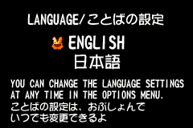

Puyo Pop (Europe) (En,Ja)
EEPROM 4K Save Format Mapped (Family Spec)
Cartridge Identity
- Game Code
APYP(FamilyAPY)- Header Title
PUYO POP- Maker / Revision
6W/ rev0- ROM Size
- 8.0 MiB (8,388,608 B)
- Save Media
EEPROM 4K- SHA-256
be4f2b9e01691747d98772e827aaecdedb1cb50352093429f47c323186b46b68- Engine / SDK Group
comm-002(145 families)
Screenshots

Battery Save Format Specification (Family Shared)
This release shares its save architecture with canonical family reference Minna de Puyo Puyo (Japan) (En,Ja) (Family
APY).
Open Family Save Format Spec (APYJ)Download save-format.json
- Canonical Specification
APYJ· 15 mapped fields · 0 verified checksum(s) · Confidence: MEDIUM- gbakit Built-In Support
- Built-in (APYJ)
gbakit save verify APYJ save.sav
gbakit save decode APYJ save.sav
gbakit save fix APYJ damaged.sav -o repaired.savObserved Battery Save Layout
- Fill Byte & Active Size
0x00fill · 380–512 / 512 B active (entropy 4.53 bits/B)- Active Offset Ranges
0x0–0x1FF(1 total)- ASCII Magic / Headers
1MOYUP- Observed Variable Regions
- 479 bytes across 2 spans:
0x0–0x1BE,0x1C0–0x1DF - Candidate Checksum/Counter Spans
- None
Regional Variants & Revisions (Family APY)
- Minna de Puyo Puyo (Japan) (En,Ja) (
APYJ, 8 MiB) - Puyo Pop (USA) (En,Ja) (
APYE, 8 MiB)